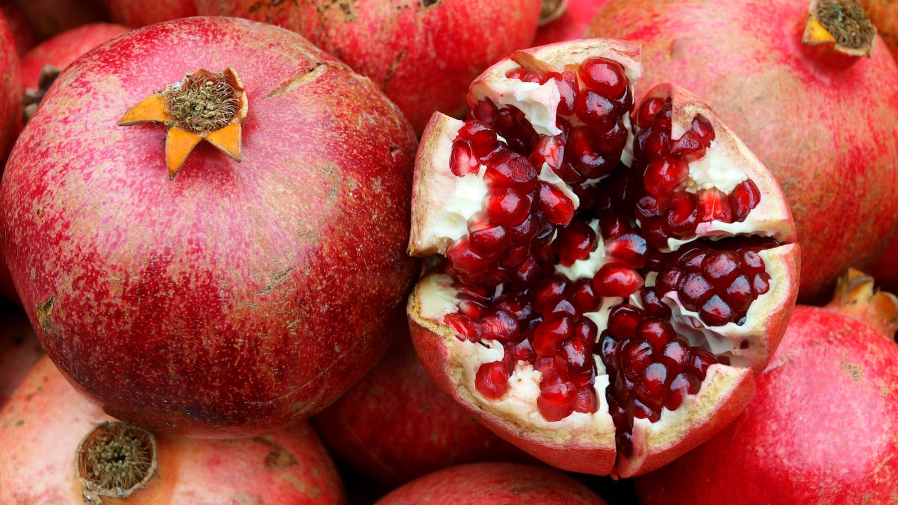
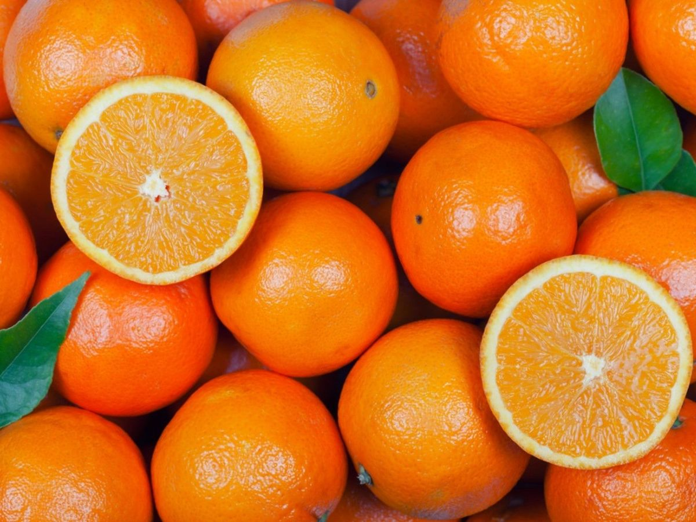

Red and Orange Fruits
Pomegranates: 4 stars
Taste: Pomegranate is absolutely delicious. I love flavors that are sweet and sour, and eating pomegranate is like eating sour candy. Pomegranate is sour, but unlike grapefruit, it isn’t bitter, which I love.
Structure: Pomegranate looks a little strange from the outside, but its inside is very pretty. All of those tiny seeds make it super fun to eat, and its texture is perfect for its pungent taste. The color is also beautiful; a very sharp pinkish-red that adds to its enjoyment. However, pomegranate is a high-effort fruit. Unlike an apple, you can’t just grab a pomegranate and start chomping. The seeds are delicious but they have to be separated from the pomegranate’s white part, called the albedo, which has an unpleasant taste. There are several ways to do this, but all of them take time.
Goes well with: Honestly, I haven’t tried many things with pomegranate, probably because it takes so much time to prepare that I feel like I must enjoy it in its fullness to get the most out of it. But once my grandmother gave me some pomegranate mixed with peanut butter, which sounds a bit strange, but it was delicious. Also, I imagine pomegranate goes well with salad. Pomegranate juice is another popular way to have pomegranate, but personally, I’m not a big fan. It can be very bitter, and pomegranate in juice form doesn’t have that fun crunch.

Strawberries: 4 stars
Taste: Strawberries have a lovely, sweet flavor with just a hint of tartness. When perfectly ripe, they are juicy and full of flavor, making them a delicious treat. However, unripe strawberries can be quite sour and lack sweetness, which can be disappointing.
Structure: The structure of strawberries is part of their charm. They have a bright red color with tiny seeds on the outside, and their shape is quite attractive. The texture is generally soft and juicy, but the green leafy top needs to be removed before eating, which is a minor inconvenience. When they are overripe, they can become mushy, which is less enjoyable.
Goes well with: Strawberries are incredibly versatile and go well with a variety of foods. They are perfect in desserts like strawberry shortcake or dipped in chocolate. Adding strawberries to a fruit salad or green salad with balsamic dressing can elevate the dish. They are also fantastic in smoothies, providing a natural sweetness. Strawberry jam and preserves capture the fruit’s essence wonderfully and can be enjoyed year-round.
Oranges: 3.5 stars
Taste: Oranges have a bright, refreshing taste that is both sweet and tangy. They are juicy and provide a burst of citrus flavor that is incredibly satisfying. However, the taste can vary depending on the ripeness and variety of the orange. Sometimes, they can be a bit too tart for my liking, and occasionally, you might come across a dry or bland one.
Structure: The structure of an orange is quite interesting. It has a thick, protective peel that can be a bit cumbersome to remove. Once you get past the peel, the segments inside are easy to separate and enjoy. The vibrant orange color is visually appealing, and the segments are juicy and fun to eat. However, the presence of seeds in some varieties can be a bit annoying, and the white pith can be bitter if not completely removed.
Goes well with: Oranges are quite versatile and pair well with a range of foods. They add a refreshing twist to salads, especially when combined with spinach, nuts, and a light vinaigrette. Orange slices can brighten up a fruit salad, and their juice is a popular addition to smoothies and cocktails. Additionally, oranges work well in savory dishes, such as a glaze for roasted meats or in a tangy salsa. Orange zest is also a fantastic way to add a burst of citrus flavor to baked goods and desserts.